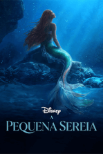
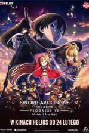
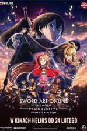
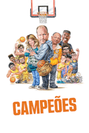
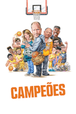

Velozes e Furiosos 10
2023 ‧ Ação/Aventura ‧ 2h 21m
Dom Toretto e sua família precisam lidar com o adversário mais letal que já enfrentaram. Alimentada pela vingança, uma ameaça terrível emerge das sombras do passado para destruir o mundo de Dom e todos que ele ama.
Em Cartaz

 

 


Filmes Marcantes


Ranking Pop Web